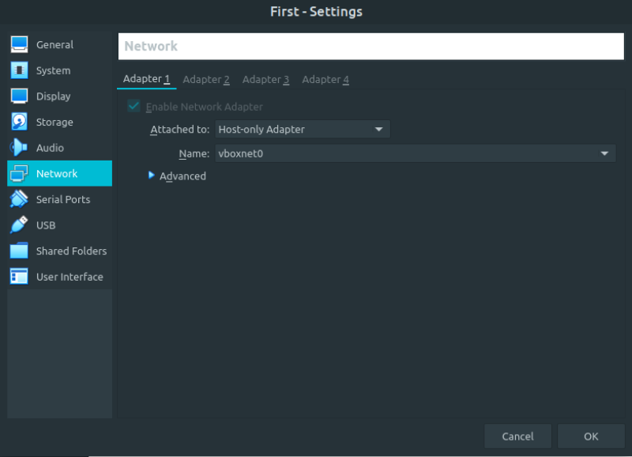
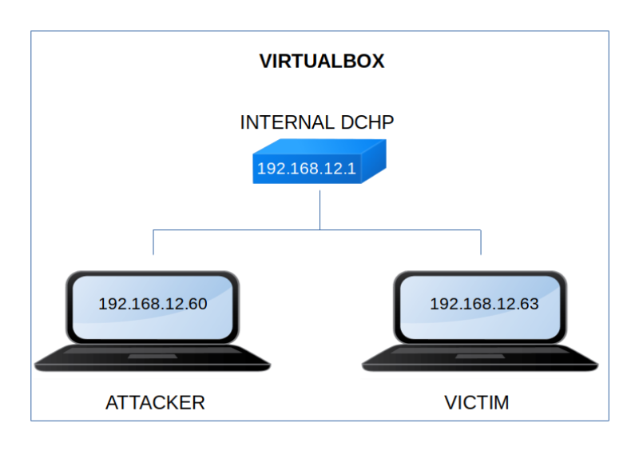

First
▸ First
▸ 2. Finding Services and Ports
▸ 3.1 FTP
▸ 4.2 Get an user (First flag)
▸ 5.2 Send file to the Kali Machine
Difficulty: Beginner.
Flag: 2 flags.
Learning:
• Reconnaissance
Scan Network
Find services
• Enumerate
FTP
Steganography
Decode base64
Feroxbuster
• Exploitation
PHP Reverse Shell
Gtfohins
• Privilege Escalation
Sudoers
Transfer files with netcat
Ghidra
• Download (Mirror): https://downloads.hackmyvm.eu/first.zip
Install the machine on VirtualBox:
1. Download the file and extract it.
2. On Virtualbox choose File->Import Appliance.
3. Select the file “ova”.
4. Accept to import.


Watch your Machine IP.
$ ifconfigOutput:

Diagram
